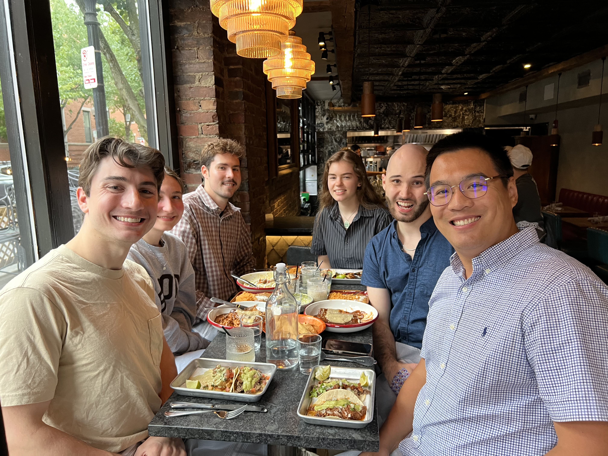

Planck Energies
Add two or three sentences on what you built or measured here.
Paint formulations
Add a couple of sentences summarizing the paint formulations and what you learned from them.


Outdoor testing setup
Add a couple of sentences summarizing the outdoor testing setup and what the tests measured.


Live Temperature Measurement System
Add a couple of sentences summarizing the live temperature measurement system and how it was used.